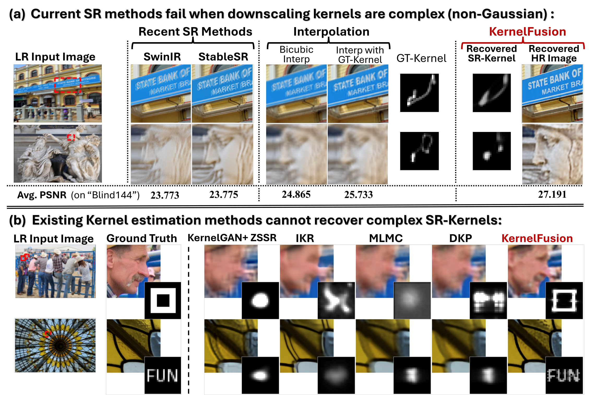
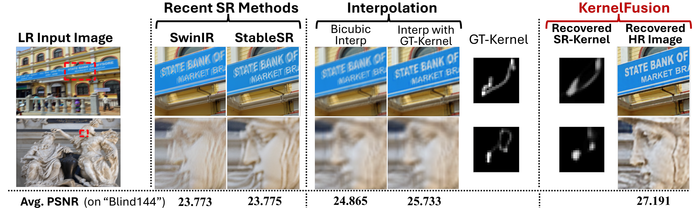
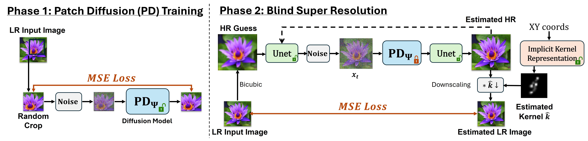
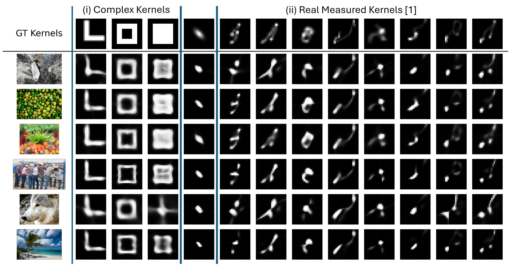
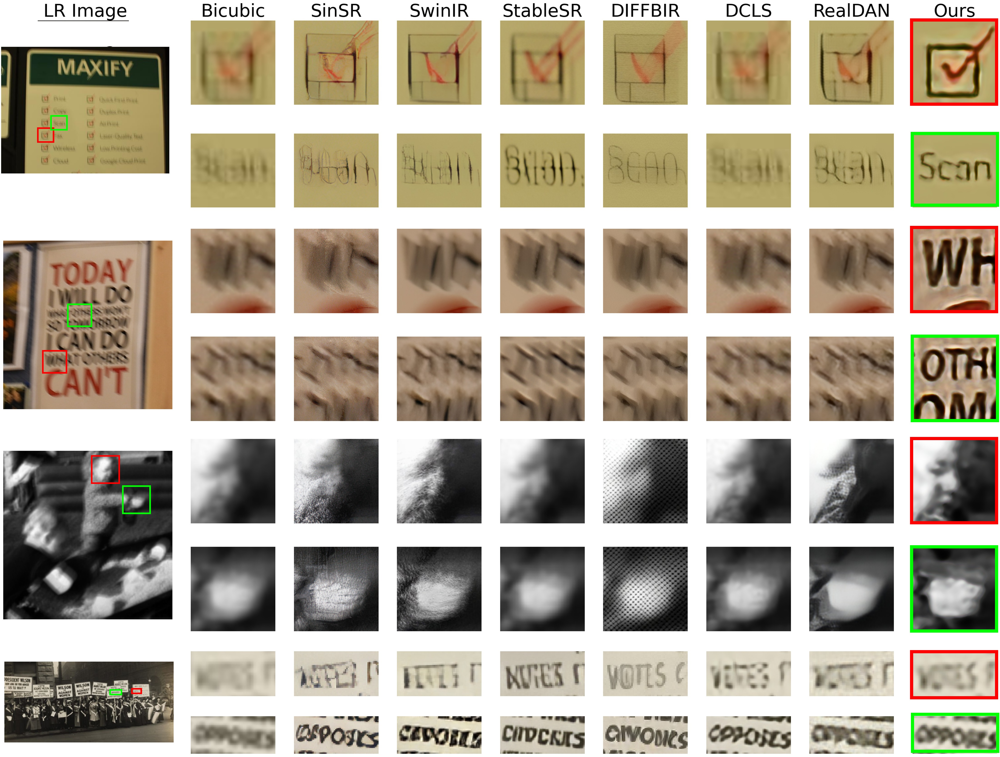

KernelFusion: Zero-Shot Blind Super-Resolution via Patch Diffusion
* Denotes Equal Contribution
Weizmann Institute of Science1
Technion2
ICLR 2026

TL;DR
SotA Blind-SR methods can super-resolve well LR images which were downscaled by simple, low-pass-filter kernels (e.g., (an)isotropic Gaussians),
and fail on more complex downscaling kernels, which are outside their training distribution. In fact,
for LR images obtained by non-Gaussian downscaling kernels, SotA Blind-SR methods perform
worse than simple interpolation.
We introduce KernelFusion, a zero-shot diffusion-based approach that learns an image-specific patch prior from the input LR image and jointly estimates an unrestricted SR kernel and the HR reconstruction by maximizing cross-scale patch consistency.
By breaking free from predefined kernel assumptions and training distributions, KernelFusion establishes a
new paradigm of zero-shot Blind-SR that can handle unrestricted, image-specific
kernels previously thought impossible.

Method Overview
Our approach consists of 2 stages:
Phase 1: We train a diffusion model (PD) to learn the patch distribution of a single image.
Phase 2: We perform blind SR and kernel estimation simultaneously. In particular, we use the trained PD to shift the HR guess toward the patch distribution of the LR input. A refinement U-Net and an implicit kernel representation model are trained jointly under a consistency loss, ensuring that convolving the estimated HR image with the learned kernel reproduces the original LR image.

Datasets
Our evaluation targeted unrestricted kernels through:
(i) artificial complex non-Gaussian kernels, (ii) real measured downscaling kernels[1].
DIV2KFK: DIV2K-val set downscaled using 8 real camera kernels from Levin et al. (2009), induced by small camera jitter during the shutter exposure time. Each image uses a randomly chosen downscaling kernel.
Blind144: 12 images × 12 kernels (144 cases) to isolate the effect of image content vs. kernel.
We further evaluated our method on real-world images from various different sources.

Kernel estimation results on Blind144. The top row displays the 12 ground-truth (GT) degradation kernels, including real-world motion blur kernels from Levin et al. (2009), an anisotropic Gaussian kernel, and three synthetic non-natural kernels (L-shape, empty square, and filled square). The subsequent rows show our method’s estimated kernels for each of the 12 kernels applied to 6 sample images of the DIV2K validation set. Our approach successfully captures a diverse range of degradations, including complex structured kernels, demonstrating its robustness and adaptability in blind SR kernel estimation.
Blind-SR Comparison on DIV2KFK Dataset
Explicit SR Kernel Estimation and SR Under Extreme Downscaling (Blind144 Dataset)

Real-World Images
We further evaluate KernelFusion on real-world images from various sources, where the true downscaling kernel is unknown. Notably, the recovered kernels are non-Gaussian, highlighting that real-world degradations deviate from the simplistic assumptions made by existing Blind-SR methods. Our method produces sharp reconstructions without any assumption on the degradation.

References
[1] Netalee Efrat, Daniel Glasner, Alexander Apartsin, Boaz Nadler, and Anat Levin. "Accurate blur models vs. image priors in single image super-resolution." ICCV 2013.
Bibtex
More results, comparison to other methods and further discussion about our model can be found in the Appendix.
Our official code implementation can be found in the official github repository.
Acknowledgements
A.S. is a Chaya Fellow, supported by the Chaya Career Advancement Chair.
This webpage was originally made by Matan Kleiner with the help of Hila Manor. The code for the original template can be found here.
Icons are taken from font awesome or from Academicons.